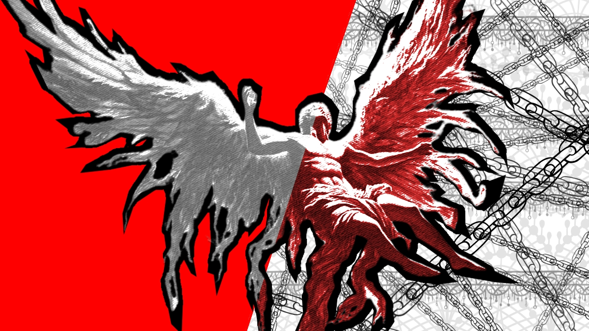
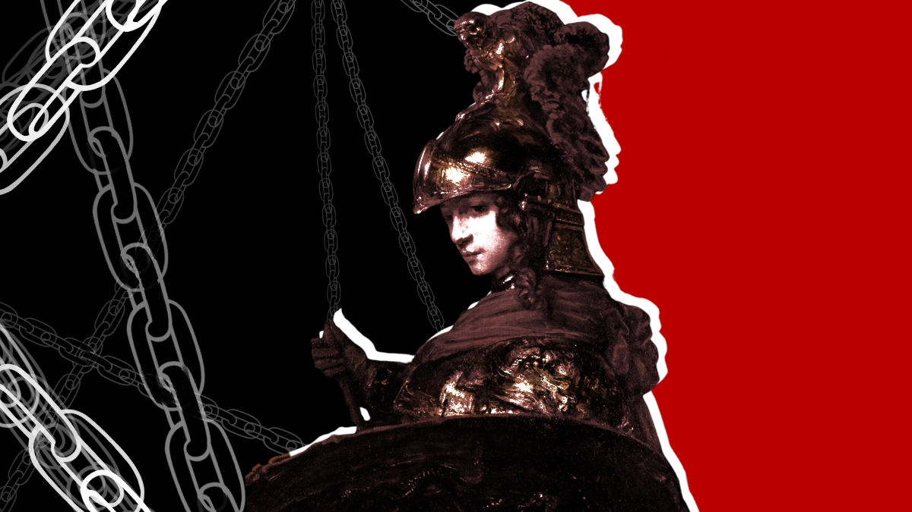
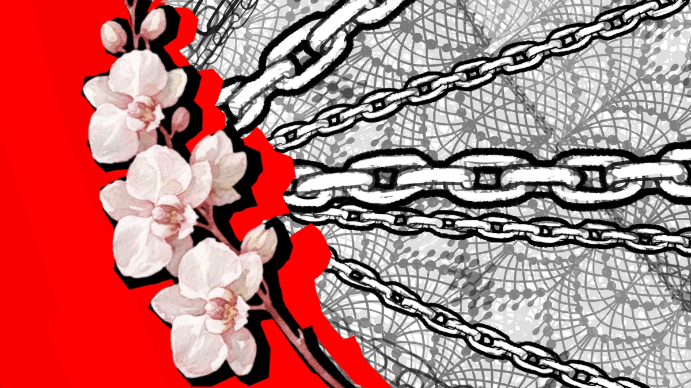
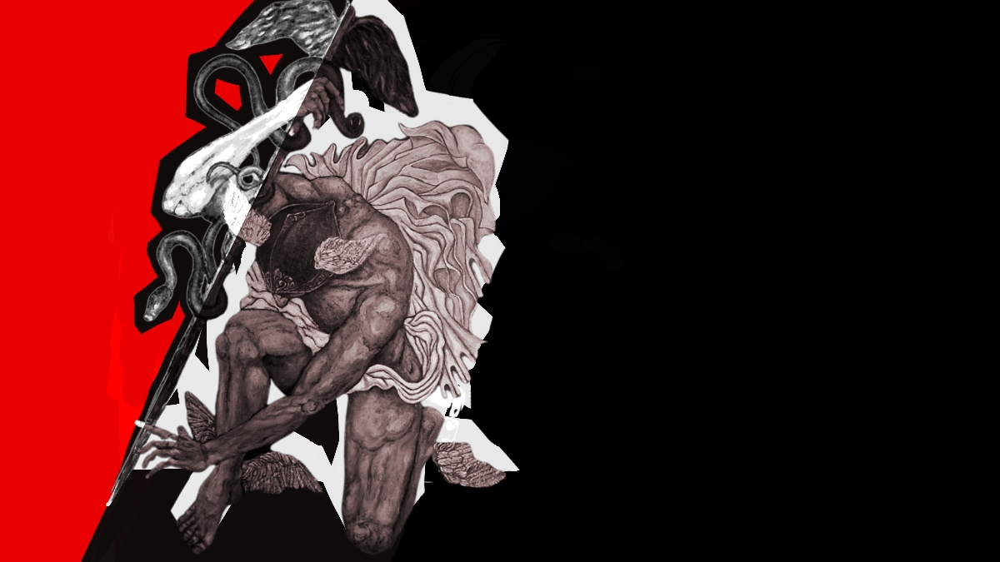
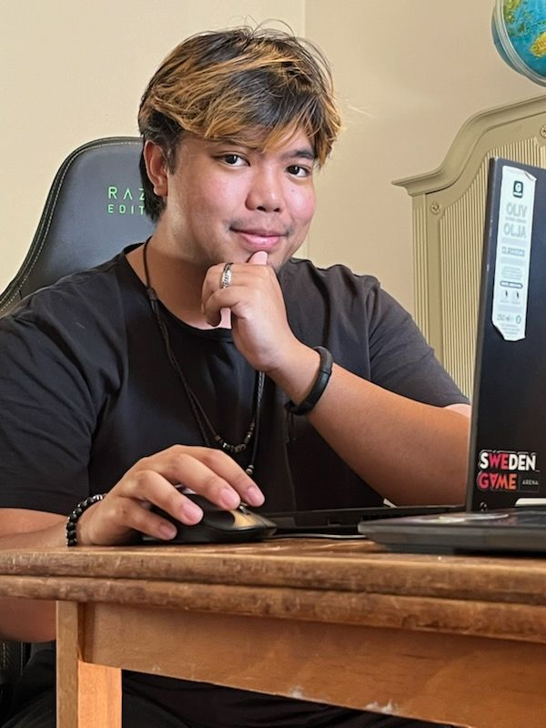

Game Developer with a natural affinity for Gameplay, Game Feel, and Juice. I love creating flashy, stylish experiences that make players feel powerful, expressive, and immersed in the fantasy of their character. With over a decade of making games as a hobby and two major projects under my belt, I combine programming, game design, and a passion for interactive storytelling to bring ideas to life.

I believe the best games are the ones that make you feel something. Whether it's the rush of tearing through a battlefield at impossible speed, the satisfaction of landing a perfectly timed attack, or the quiet weight of a story moment, games have a unique ability to turn ideas into experiences.
I am a Game Programmer and Game Developer currently studying Game Programming at Yrgo. I previously studied Software Engineering at Blekinge Institute of Technology, but my passion has always been games. I have been making games as a hobby since I was 13, experimenting with programming, mechanics, and design long before I knew where those interests would take me.
At Yrgo, I have had the opportunity to take that passion into larger team projects. I served as Game Director for both Chaos Courier and Project Overdrive, leading their development from concept through production and submission. These projects have allowed me to explore the parts of game development I enjoy most: gameplay, game feel, juice, player fantasy, and creating experiences with a strong visual and mechanical identity. Both projects are available to play on itch.io.
My approach to game development is rooted in the belief that mechanics and presentation should work together. I love making games that are flashy, stylish, responsive, and satisfying, but I am equally interested in games that use interactivity to tell stories and create emotional experiences. Whether I am designing a movement system, tuning the impact of an attack, building an enemy encounter, or figuring out how a mechanic can better communicate a character's fantasy, I am always asking the same question: “Does this feed the core of our player fantasy?”
Alongside game development, I have experience with web development and software engineering, giving me a broader technical foundation that I bring into my work. I enjoy learning new tools, solving difficult technical problems, and working across disciplines to turn ideas into something playable.
Today, I am continuing that journey alongside the team behind Chaos Courier and Project Overdrive as we begin building our own indie game studio, Rogue Current. We want to make games with personality: games that are fun to play, satisfying to master, and impossible to mistake for something made by anyone else.
My primary goal is to continue building Rogue Current alongside my team and create games we can be proud of. We are currently working toward establishing ourselves as an indie studio and bringing our own projects to life.
That said, I'm always interested in meeting people who are passionate about games and interactive experiences. If you're looking for a Game Programmer, Game Designer, or LIA student, I'd love to hear from you. I'm particularly interested in opportunities where I can contribute to gameplay, game feel, systems, and creative problem-solving while learning from an experienced team.
Whether you're interested in working together, discussing games, or simply want to say hello, feel free to reach out.